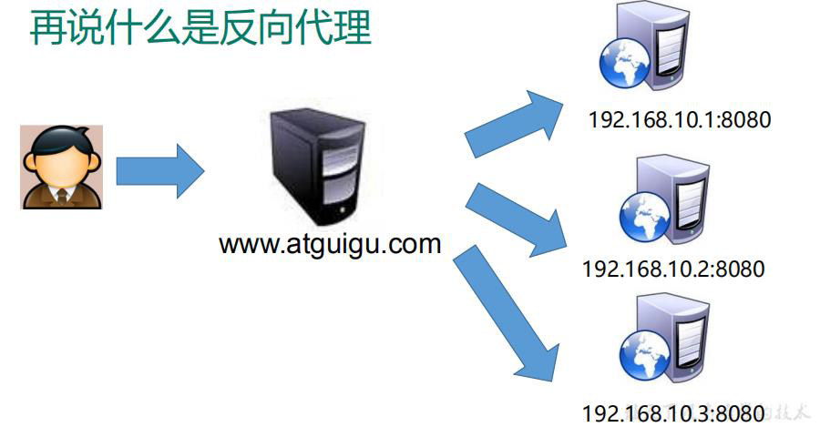
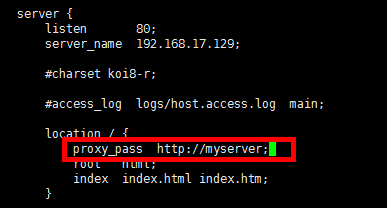

1、 nginx 简介
（1）什么是 nginx
Nginx (engine x) 是一个轻量级的、高性能的HTTP和反向代理web服务器
专为性能优化而开发，性能是其最重要的考量，实现上非常注重效率 ，能经受高负载的考验 有报告表明能支持高达 50,000 个并发连接数。
（2）可以做什么
反向代理、负载均衡、动静分离
反向代理
Nginx不仅可以做反向代理，实现负载均衡。还能用作正向代理来进行上网等功能。
正向代理：如果把局域网外的 Internet 想象成一个巨大的资源库，则局域网中的客户端要访问 Internet ，则需要通过代理服务器来访问，这种代理服务就称为正向代理。

反向代理，将请求发送到反向代理服务器，由反向代理服务器去选择目标服务器获取数据后，再返回给客户端。此时反向代理服务器和目标服务器对外就是一个服务器，暴露的是代理服务器地址，隐藏了真实服务器 IP 地址。
客户端不需要任何配置

负载均衡
将请求分发到多个服务器上，将负载分发到不同的服务器，也就是我们所说的负载均衡
动静分离
为了加快网站的解析速度，可以把动态页面和静态页面由不同的服务器来解析，加快解析速度。降低原来单个服务器的压力。

简单来说就是把动态跟静态请求分开，不能理解成只是单纯的把动态页面和静态页面物理分离。严格意义上说应该是动态请求跟静态请求分开，可以理解成使用Nginx 处理静态页面，Tomcat处理动态页面。
动静分离从目前实现角度来讲大致分为两种：
一种是纯粹把静态文件独立成单独的域名，放在独立的服务器上，也是目前主流推崇的方案；
另外一种方法就是动态跟静态文件混合在一起发布，通过 nginx 来分开。
通过 location 指定不同的后缀名实现不同的请求转发。通过 expires 参数设置，可以使浏览器缓存过期时间，减少与服务器之前的请求和流量。
具体 Expires 定义：是给一个资源设定一个过期时间，也就是说无需去服务端验证，直接通过浏览器自身确认是否过期即可，所以不会产生额外的流量。此种方法非常适合不经常变动的资源。（如果经常更新的文件，不建议使用 Expires 来缓存），我这里设置 3d，表示在这 3 天之内访问这个 URL，发送一个请求，比对服务器该文件最后更新时间没有变化，则不会从服务器抓取，返回状态码 304，如果有修改，则直接从服务器重新下载，返回状态码 200。
2、 Nginx 的安装

安装省略，可以参考另外一篇笔记
3、 Nginx 的常用命令和配置文件
常用命令
在/usr/local/nginx/sbin 目录下执行命令
1 | # 启动 |
配置文件
1 | worker_processes 1;# nginx 处理并发的数量 |
第一部分：全局块
从配置文件开始到 events 块之间的内容，主要会设置一些影响nginx 服务器整体运行的配置指令，主要包括配置运行 Nginx 服务器的用户（组）、允许生成的 worker process 数，进程 PID 存放路径、日志存放路径和类型以及配置文件的引入等。
第二部分：events块
events 块涉及的指令主要影响 Nginx 服务器与用户的网络连接，常用的设置包括是否开启对多 work process 下的网络连接进行序列化，是否允许同时接收多个网络连接，选取哪种事件驱动模型来处理连接请求，每个 word process 可以同时支持的最大连接数等。 上述例子就表示每个 work process 支持的最大连接数为 1024.
这部分的配置对 Nginx 的性能影响较大，在实际中应该灵活配置。
第三部分：http块
代理、缓存和日志定义等绝大多数功能和第三方模块的配置都在这里。 需要注意的是：http 块也可以包括 http全局块、server 块。
（1） http 全局块
http全局块配置的指令包括文件引入、MIME-TYPE 定义、日志自定义、连接超时时间、单链接请求数上限等。
（2）server 块
和虚拟主机有密切关系。
虚拟主机从用户角度看，和一台独立的硬件主机是完全一样的，该技术的产生是为了节省互联网服务器硬件成本。
每个 http 块可以包括多个 server 块，而每个 server 块就相当于一个虚拟主机。
而每个 server 块也分为全局 server 块，以及可以同时包含多个 locaton 块。
1、全局 server 块
最常见的配置是本虚拟机主机的监听配置和本虚拟主机的名称或IP配置。
2、location 块
一个 server 块可以配置多个 location 块。
这块的主要作用是基于 Nginx 服务器接收到的请求字符串（例如 server_name/uri-string），对虚拟主机名称（也可以是IP别名）之外的字符串（例如 前面的 /uri-string）进行匹配，对特定的请求进行处理。地址定向、数据缓存和应答控制等功能，还有许多第三方模块的配置也在这里进行。
4、反向代理实例
实例1

本机 host 文件添加
1 | 192.168.17.129 www.123.com |
Nginx 配置文件
测试

实例2
实现效果
使用 nginx 反向代理，根据访问的路径跳转到不同端口的服务中
nginx 监听端口为 9001
访问 http:// 192.168.17.129 :9001/edu/ 直接跳转到 127.0.0.1:808 0
访问 http:// 192.168.17.129 :9001/vod/ 直接跳转到 127.0.0.1:808 1
Nginx 配置修改
再添加一个 server 块，添加配置
测试


5、负载均衡实例
负载均衡配置

负载均衡的策略
轮询、加权、iphash、fair
轮询（默认）
每个请求按时间顺序逐一分配到不同的后端服务器，如果后端服务器 down 掉，能自动剔除。
weight
weigh t 代表权重默认为 1, 权重越高被分配的客户端越多
1 | upstream server_pool{ |
ip_hash
每个请求按访问 ip 的 hash 结果分配，这样每个访客固定访问一个后端服务器，可以解决session的问题
1 | upstream server_pool{ |
fair （第三方）
按后端服务器的响应时间来分配请求，响应时间短的优先分配。
6、 动静分离实例
这里 www 和 image 是静态目录
7、配置高可用集群
主从

- 需要两台 nginx 服务器
- 需要 安装keepalived
- 需要虚拟 ip
https://www.bilibili.com/video/BV1zJ411w7SV?p=14&spm_id_from=pageDriver
8、Nginx 原理
work 是如何工作的
一个 master 和多个 woker 有什么好处
1 ）可以使用 nginx -s reload 热部署
2 ）每个 woker 是独立的进程，如果有其中的一个 woker 出现问题，其他 woker 因为是独立的，继续进行争抢，实现请求过程，不会造成服务中断
设置多少个 woker 合适
worker 数和服务器的 cpu 数相等是最为适宜的
连接数 worker_connection
第一个：发送请求，占用了 woker 的几个连接数？
答案： 2 或者 4 个
一来一回是两个，如果只是静态资源，2个；如果访问了动态资源（比如访问了数据库），4个
第二个： nginx 有一 个 master ，有四个 woker ，每个 woker 支持最大的连接数 1024 ，支持的最大并发数是多少？
- 普通的静态访问最大并发数是：
worker_connections * worker_processes / 2 - 而如果是 HTTP 作 为反向代理来说，最大并发数量应该是
worker_connections * worker_processes / 4
问题
session 丢失如何解决？
（1）使用容器扩展插件来实现
（2）使用Nginx负载均衡的ip_hash策略
（3）使用框架的会话管理工具——比如Spring session